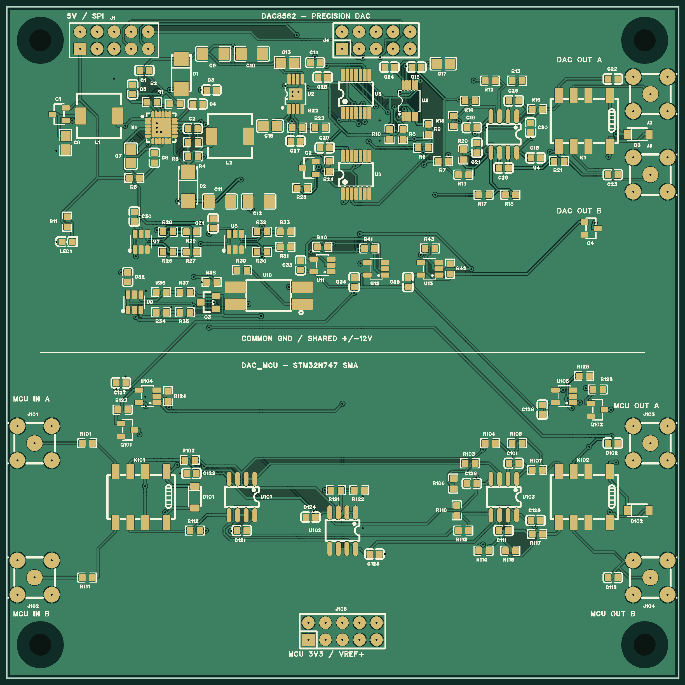

2026-10-13 · 원본 프로젝트의 Page 1 / Page 2 및 Board1 · 100×100mm, 2층
06 구역은 SPI 게이트 / 전원 감시 / 음전원 레벨 변환 / 기본 출력 뮤트로 나누고 블록 내부를 일반 와이어로 연결했습니다. DAC_MCU는 입력→버퍼→차동 출력의 피드백 배선을 직접 그렸으며 릴레이 블록 경계와 공통 전원·기준에만 포트·라벨을 사용했습니다. 두 페이지 모두 저장→닫기→재열기 후 ERC 통과입니다.
수정 1: R117 뒤쪽의 회로도 누락을 MCU_SENSE_B에 연결했습니다. PCB는 원래 정상 연결이었습니다. 수정 2: Q3의 VGS가 약 12.13V로 AO3400A의 ±12V 한계를 넘을 수 있어 ±20V 정격의 2N7002LT1G로 교체했습니다. 제조사 AO3400A, 2N7002L 정격·1=G/2=S/3=D 핀 배열 기준입니다.
AVDD = 1.185×(1+34k/10k) = 5.214V 명목. TPS7A49 전체 오차 ±2.5%와 저항 ±0.1%를 보수적으로 합산하면 약 5.076~5.352V입니다. LP2985는 단종이 아니지만 원래 5V 입력에서 5V 출력을 보장할 수 없어서 12V 후단 LDO로 바꾼 설계를 유지합니다. TI TPS7A49
DAC8562 출력은 명목 4.115226×(VDAC−2.5V), 이론 ±10.288V 및 약 0.314mV/LSB입니다. 16비트가 곧 ±0.314mV 정확도를 의미하지 않습니다. INL 최대 ±12LSB는 출력 환산 약 ±3.77mV이고 기준·오프셋·이득·저항 오차는 별도입니다. 코드 범위 제한과 2점 보정이 필요합니다. TI DAC8562T
STM32H747 경로는 명목 (100k/14k)×(VIN−VREF+/2), VREF+=3.3V에서 0.25~3.05V→약 ±10V입니다. 출력 LSB는 약 5.75mV이므로 DAC8562와 같은 정밀도가 아닙니다. 내부 DAC 버퍼의 보증 출력 범위·부하 조건에 맞춰 제어하십시오. ST STM32H747 데이터시트
검토 BOM 보기 · 부품·그룹 데이터 · 154개 부품, 158개 심볼 인스턴스. Q1의 Si2323DDS 교체 유지, Q3는 C16338로 변경. TPS65131, DAC8562T, TPS7A49, TPS3700, OPA2277은 제조사 현행 제품 확인. L1/L2는 TDK Production 상태입니다. 모든 수동 조달 부품의 납기·실장 가능성까지 확정한 것은 아닙니다.
현재 24.3k/100k 및 14k/100k, 100Ω+22pF 이중 피드백, 출력 100pF, 접점 0.1Ω 기준으로 TI OPAx277 모델을 재실행했습니다. 10k/100k/1MΩ 부하와 추가 케이블 0/470/5000pF에서 AC·루프·스텝 54건, 느린 전범위 전환 4건 총 58건 통과. 최소 위상 여유 DAC8562 82.24°, MCU 101.54°; 1% 스텝 정착 최악 12.67 / 15.20µs. 이는 DAC IC 자체의 정착·INL 보증과 다른 아날로그 증폭기 선별 결과입니다.
직접 DC/기본 OP 계산은 수렴 실패가 있어 실패 기록을 보관하고, ngspice의 문서화된 optran 초기화와 충분히 느린 전범위 transient plateau로 재검증했습니다. 실패한 DC sweep을 통과로 집계하지 않았습니다. 저항 ±0.05%만으로도 무보정 최악 오차 약 10.29mV / 10.44mV가 나옵니다. 정밀도는 실측 보정이 필요합니다. 전체 수치·제한
두 구역의 100×100mm 배치를 유지했습니다. 실제 풋프린트와 PAD_NET을 대조하고 동박·패드·비아·GND 영역의 교차 연결을 독립 검사했습니다. 부품 패드 489개(연결 481개, NC 8개), 90개 네트에서 단선·단락 0건. Q3 주변만 새 풋프린트에 맞춰 VNEG12 우회 및 R38 GND 비아를 추가했습니다. Native DRC의 물리적 간격·연결 오류는 0건입니다.
마지막 비교 창의 Q3:Name 한 건을 기본 ={Manufacturer Part} 표시로 동기화하여, 저장 후 재열기에서 EasyEDA PCB DRC도 0건으로 통과했습니다. 마지막 ECO는 표시 속성만 변경했고 기존 직선 트랙의 자동 분할은 동박 모양·폭·네트를 바꾸지 않았습니다. 변경 대조 · 저장·제작 파일 검증
최신 수정본: EasyEDA 편집 프로젝트 · 이식용 프로젝트 export · Native Gerber · 실크 간격 보정 Gerber. 이전 pcb-two-zone Gerber는 Q3의 이전 풋프린트이므로 이번 수정본 제작에 사용하지 마십시오.
DFM 사본은 상면 실크만 마스크에서 약 0.15mm, 외곽에서 0.15mm 이격하도록 잘랐습니다. 동박·마스크·외곽·드릴 파일은 Native export와 바이트 단위 동일합니다. 100×100mm 외곽, 비아 134개, 고정홀 4개를 실제 Gerber에서 대조했습니다. Combined PTH에는 비아가 포함되므로 Via-only DRL은 중복 참고용이며 추가 드릴 패스로 사용하지 마십시오.

위 그림은 실제 최신 Gerber 렌더링입니다. 회로도 PNG/SVG export는 현재 EasyEDA 3.2.149에서 timeout이 발생하여 캐시 썸네일을 최신 가독성 검증 이미지로 사용하지 않았습니다. 현재 회로도 소스, 재열기 ERC 및 export의 부품·핀 네트·일반 와이어 형태는 별도 대조했습니다. 회로도 export 대조
시제품 소량 기준으로 복제 마우스바이트 패널을 만들지 않습니다. 현재 보드는 단일 ≤102×102mm 특가 구간에 들어가지만 routed/mouse-bite 패널은 일반 engineering fee+board fee 대상입니다. 2개를 2mm 간격·5mm 레일로 묶는 단순 예만 해도 최소 110×212mm이고 4개는 212×212mm가 됩니다. 실제 SMA 몸체 간섭 여유는 추가로 필요합니다. 면적·가공비·분리 스트레스가 늘고, 현재 물량에서 조립 효율 이점은 확인되지 않았습니다. 수량·표면처리·배송·세금이 미정이므로 확정 견적 금액은 제시하지 않습니다. JLCPCB 요금 규정, 패널 가공 규격, 조립 패널 권고
추후 50개 이상 실장 요구가 확정되면 제조사의 실장 공정에 맞춰 2-up 패널과 단일 수량의 동일 납품 수량 견적을 비교하십시오. 마우스바이트는 2mm 간격, 최소 5mm 탭, 제조사 검토된 홀 규칙·레일·돌출 커넥터 금지영역 기준으로 새로 설계해야 합니다. 현재 Panel1은 변경하지 않았습니다.
권장 순서: 5V 입력과 ±12V/AVDD 상승·하강·오버슈트 → GPIO/SPI 차단 → muted DAC 초기화 → 더미 고임피던스 부하에서 ±9.5V부터 케이블 안정성 → 보정 및 허용 코드 확정 → 외부 장비 연결.
요청된 Git 전달 여부는 실제 커밋 및 origin/main HEAD로 확인합니다. 이 보고서는 CAD 검사 증거이며 미래 push를 예측하지 않습니다. 제작·실장 주문은 하지 않았습니다.